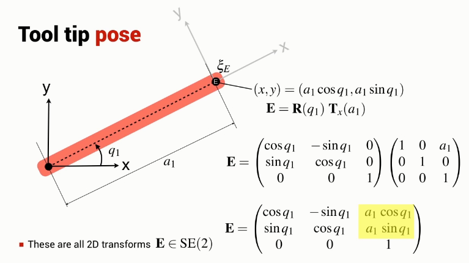

Get to the end effector frame by rotating and translating the reference coordinate frame.

Both position and angle is a function of the angle \(q_1\) and so the position and angle cannot be set independently.
i.e. can move to any point lying on a circle